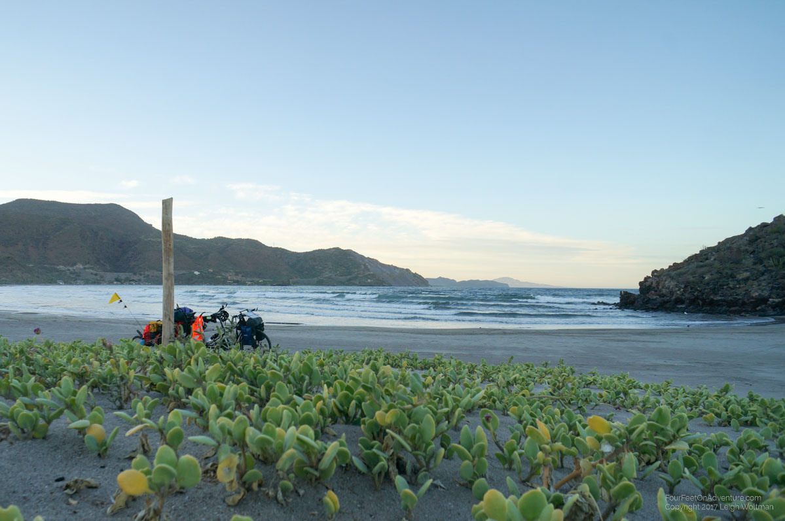
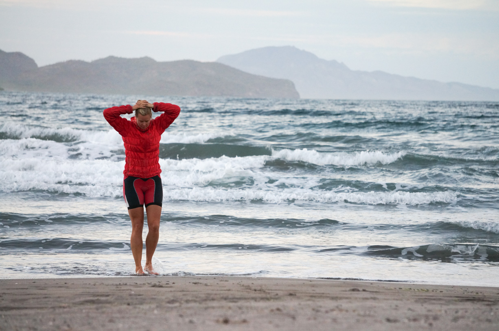
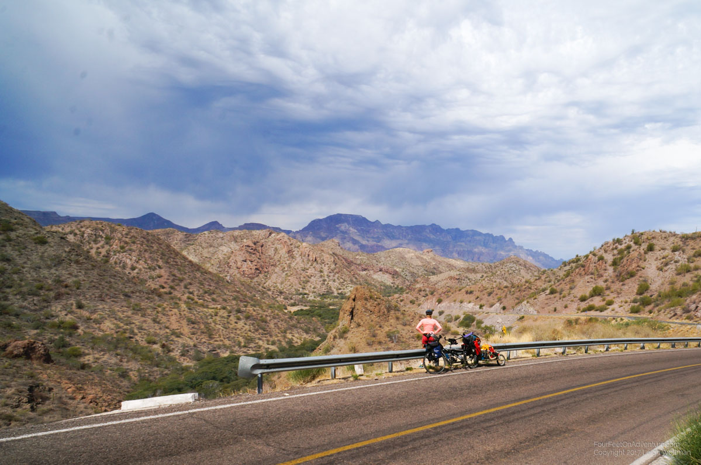
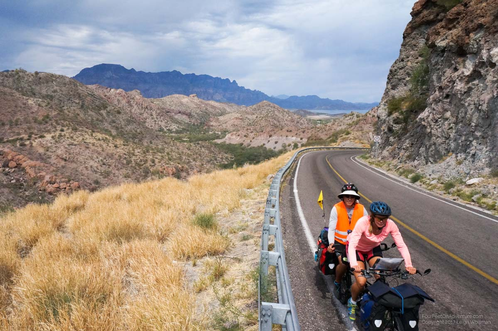
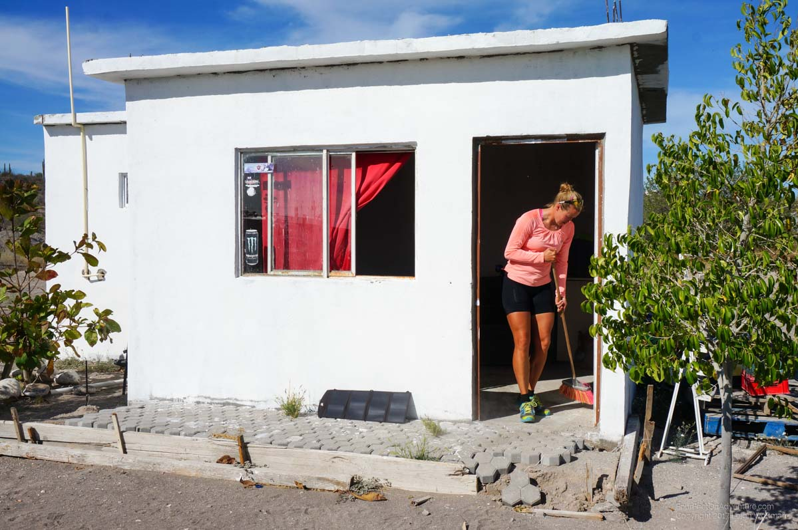

Email Us
Please send us an email, we would love to hear from you!

Sometimes your patience gets tested travelling, it can seem so difficult at times to get something done. In Loreto we decided to have a ‘short’ biking day to get us close to the major hill over the mountain range aptly called ‘Sierra de la Giganta’. So the morning would then be for chores in town. So many of these chores are digital and require WiFi so we sat huddled around a laundry machine in the campground to optimize our wireless signal. However, a couple hours of having connection drops and webpage timeouts slowly starts to wear at your patience. Finally, we decided to pack up and hit a coffee shop on the way out of town. I had previously been there when transiting through Loreto and knew it had good WiFi.
We packed up the bike, and went to roll out of the campground. Flat tire in the first 50 metres. We wheeled back to the campground and unpacked the bike to repair the front tire. Another piece of metal proved to be its undoing. After fixing it in the sweltering sun, we pedaled to the coffee shop while stopping at a sewing shop on the way. A spool of nylon thread was in order to fix up some gear. Finally at the coffee shop as the morning had dragged onto mid-afternoon. I went to get the tablet, and Annette would go to order. Locked door. There’s a table outside and the phone, having saved the WiFi password, connects right away, but we need the tablet connected and we can’t read the WiFi password posted inside the store. On to the next coffee shop, Annette orders a big slice of cake, and we sit down. WiFi isn’t working. This is taking forever, tick, tick. I force her to eat fast, so we can move on. Next, we visit another cafe. This one has a huge line, too long to way. Tick, tick, tick, the afternoon is now passing by. Finally, we go to the restaurant we visited the night prior and order another round of fish tacos. Their WiFi is good and we can finally get some stuff done. In all, visiting a couple web pages has taken a majority of the day and used up my weekly allotment of patience!
Of course, by now, most of the afternoon is gone, but we still hit the road and attempt to make our target. However, the sun is starting to go down and we are still 15 kilometers from our destination beach. We can see another beach that looks like it has some people free camping on it. Fortunately a passing van of British Columbians points us down the right gravel road or we wouldn’t have found it before dark.
The beach is part of the UNESCO heritage park here but it seems that people are allowed to just drive onto the sand and camp. We do the same, at least until the sand gets soft and we have to push the bike dragging it like it is an anchor for a yacht. Fortunately, we are still pretty full from the restaurant so we setup the tent and I get some sewing done while Annette greets our neighbours. The sound of waves gently puts us to sleep for a quiet night.


In the morning, we repeat the bike dragging, and once on solid gravel, have to empty the shoes and wipe the chains of sand. Today, we hope to make it up of the Giganta and then coast downhill to the next town almost 100 kilometers away. We have roadside kilometer markers counting down to this town so our progress is easy to measure. Giganta is a good climb rising about 450 metres but we are ready for it and take it slow. The road switchbacks nicely up and away from the Gulf of California.


As we reach the top, some rain appears to be drifting down from the clouds in front of us. A giant bolt of lightning jumps from one cloud to another. We pedal on, but the next strike can be heard so we stop underneath a road side rock cut. The rain starts and we huddle under our tarp just draping it over our heads. It doesn’t last long and we continue on the road. We supplement our lunch with some quesadillas at a roadside restaurant. Here quesadilla is literally a tortilla bread with melted cheese (‘quesa’) inside, no garnishments.
We get a little bit of downhill before the next and final climb of the day. Towards the top of this on, we pass some tow trucks near the edge of the road. What I would call a local delivery cube truck has gone off the road and dropped about 10 metres below the edge. We now recall seeing an ambulance passing us with lights one, the truck looks in one piece so hopefully the driver is okay. We reach our last summit and start the slow long downhill towards our destination. We still have 44 kilometers to go and for 2 hours we ride with no traffic passing us. We conclude the tow trucks must be working at removing the truck and have blocked traffic.
We pass a Brazilian rider in the opposite direction who stops to chat. He has been riding for a year and half from the southern tip of South America. He is excited and eager to make it to the US soon for a change of culture. His plan is to do the whole pan-American route and is heading for Alaska this summer.
Back on the highway, we notice an oscillation in the bike almost like the wheel has gone untrue. Inspection shows an unfortunate situation, the sidewall of our rear tire has torn and is stretched out a significant bubble in the tire. While I just picked up two new tires, we were hoping to use this one for a while still and then carry it as a spare. We hobble on as it still rolls and if you go fast enough, one can’t feel the oscillation, but this tire will need to be swapped out.
The final kilometer signs pass so slowly, but we are looking forward to the good hotel recommendation we got from Gary and Betty, our fellow tandem riders who are now at the southern tip of Baja and waiting for a plane ride home. We arrive to a sign that says all rooms are full. The hotel looks so nice, but the only other one in town is the same price and pretty much a dump. The room is so small we have to put the bike almost on the bed. The position of the bike makes either the bathroom door or the entrance door mutually exclusive and you have to choose which one you want and slide the bike and then crawl over the bed. To top it off, we have to kill a ton of mosquitoes, plug holes in the windows and oh ya, there’s no hot water.
The next day we can get into the nice hotel and decide to take a rest day. This hotel is like a 5 star resort comparatively (it is still pretty nice)! I tried to convince Annette to let me stay another day but she is very eager to get going. We use the morning to do some more Internet and then I switch out our back tire to one of the new ones I bought in Canada. We wanted to try one of Schwalbe’s flat-less designs but didn’t realize this tire was so much more narrow. It fits, but our tube is very oversized.
We biked a short day of 30 kilometers to the next town of Ciudad Constitucion. We check out the first campground which we find completely empty with nobody around. Our campground guide says there is another campground on the opposite side of town which we conclude will cut down the next day's distance so we pass through town, picking up groceries and water. The campground is owned by a British guy who spent most of his life in Los Angeles. It sounds like his work as an electrician who would wire marijuana grow operations got him kicked out of the US, but the story went on and on and was kind of mysterious at points.
The next day we had a slight tailwind for what we expected would be a long ride. It was flat and the tailwind allowed us to keep our average speed up to 22 km/h instead of a typical 18. We pedaled close to a hundred kilometers to the town of Las Pocitas. It was really a village, with a giant Oxxo convenience store beside a gas station. Beside that was a woman cooking food in a green bamboo hut. We heard she has a place to stay and she offers us a concrete house for the night. It has no services but will be a little more secure than tenting. Walking to the hut, we find thorns upon thorns stuck to our shoes. It appears to come from the small tufts of grass growing in the sand around the hut. Every couple of hours we remove dozens stuck in the bottom of our shoes.

We will do a good check of the tires before setting out the next morning. Today, La Paz is over 100 km away, but there is nothing significant along the way. We have a good sized hill and the first 50 km will be all gaining elevation. After the long day prior, we are moving slow on this one. By early afternoon we haven’t reached halfway and a headwind is impeding our progress, but we push on. We slowly watched our elevation click up, hoping to get to the high point of the day which would then have us up on the plateau before a long downhill run would take us into La Paz. We finally reachethe top with wobbly legs but still 50 km to La Paz. The plateau consists of rolling hills and each new hill tests our legs close to the breaking point. Along the way, we enter a new highway construction, which gives great new pavement and is wide enough to have a shoulder for biking out of traffic. However, four bridges are still being constructed. At these sites the highway diverts to a gravel road through the dry wash below the bridge and up the other side. They are sandy and dusty but we only have to push the bike once.
Finally, we see another microwave tower in the distance. Since these repeaters are usually placed at the highest point, we know they typically mark the start of the downhill for us. When we get there, we have about 1 hour until sunset and still 28 km to La Paz, but Google Maps shows a slight even downhill run all the way. Finally we tip over the edge of plateau with La Paz beckoning in the distance. We find an American run campground on the edge of town just before sunset. The lady is running the campground on land that was her father’s private airstrip in the 1950’s. She is very nice and after we paid a discounted rate for a campsite she offered us to stay in a bunkhouse for the same cost. We ended up staying a couple of nights and explore La Paz during the day. Because we were very slow getting into town and by the late afternoon all the stores we wanted to visit were closed, we had to repeat this the next day. However, we did find the Walmart for some food which gives us very non-Mexican options, like hummus!
We will stay here a bit longer, see next blog, but La Paz marks the end of the Baja for us! About 1500 km of biking down it. We aren’t quite at the tip of the peninsula but La Paz (population about a quarter million) is where the ferry leaves for the mainland.
Please send us an email, we would love to hear from you!